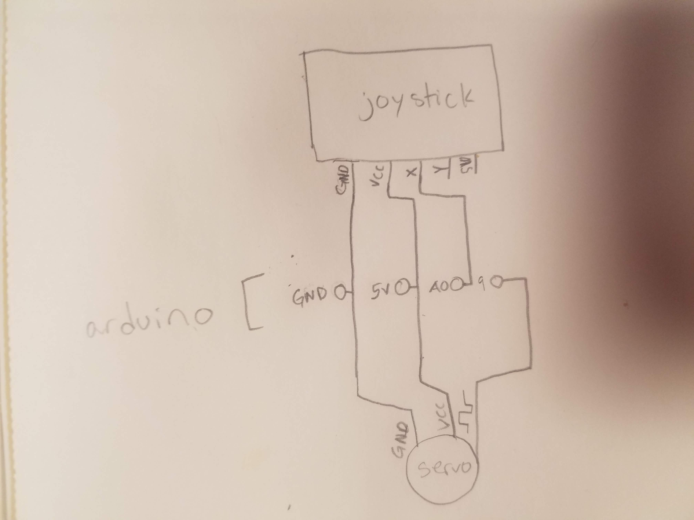
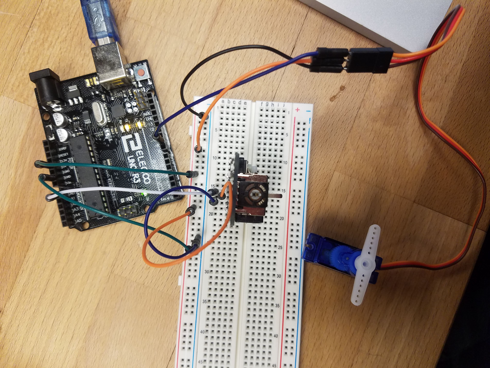

Sam's Assignment 5!
Schematic

This schematic shows the manner in which the servo and joystick were connected to the arduino. Essentially, they were both connected to the arduino 5V and ground pins, the A0 pin was used to read input from the joystick's x pin and the 9 pin was used to control the servo based on that input.
Circuit

No powersource outside the arduino is needed because the servo can run on 5V which the arduino can supply. The servo takes 100ms to move 60 degrees this means the max time it would take is 180degrees/60degrees*100ms = 300ms. I ended up setting my delay to less than that though because it makes the servo seem more responsive to the joystick and the joystick isn't going to stay in a position anyways so the most practical use of the code seemed to be to just move the servo in the general direction the joystick is pointing.
Code Snippet
The following code maps changes in the joystick x position to changes in the servo position.
//sets the read in from A0 to an integer and names it according to what it is reading
int xPin = A0;
//sets an integer variable for the x position and initializes it at 0
int xPosition = 0;
//sets an integer variable for the servo position and initializes it at 0
int servoPosition = 0;
//loads the servo libarary
#include
//creates a servo object
Servo myServo;
//runs once at the beginning
void setup() {
//initializes the serial monitior
Serial.begin(9600);
//attatches the servo on pin 9 to the servo object
myServo.attach(9);
}
//runs repeatedly
void loop() {
//reads the x value of the joystick and records it in the xPosition variable
xPosition=analogRead(xPin);
//maps the joystick x position which is between about 0 and 1020 to the range of the servo which would be 0-180 but is set as 0-170 to avoid over turning that was occuring
servoPosition=map(xPosition, 0, 1020, 0, 170);
//prints a label for the motor position to the serial monitor
Serial.print("Motor Position: ");
//prints the motor position to the serial monitor
Serial.print(servoPosition);
//moves the serial monitor to a new line
Serial.println();
//set the servo position
myServo.write(servoPosition); //some angle between 0 and 180
//wait for the servo to move some and the monitor to write
delay(100);
}
Circuit Operation